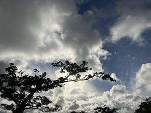

うるがいの話 ある日
最新: TOCFL（トクフル）【うるがいの話 ある日】とは 一日だけのプログです
『うるがいの話』の最新一日だけのプログで、通信料が少なく経済的だ。カニの画像をクリックすると全ての日付が載る『うるがいの話』サイトを表示します
|
|
【うるがいの話】 うるがい(ｳﾙｶﾞｲ urugai)とは、『もずくがに』の名前でとても大きくなります。 |
|---|---|
|
|
【カミマヤーの話】 猫のことを方言でマヤーといいます。カミマヤー（kamimayaa）とは、神の猫のことです。 |
|
【たながぁの音楽】 たながぁ（ﾀﾅｶﾞｰ tanagaa）とは手長えびのことで、何種類かあり大きいのは車 エビぐらいになります。 |

|
【ぶながぁの話】 ぶながぁ(ﾌﾞﾅｶﾞｰ bunagaa)とは、赤い髪の毛、赤い身体、そして身長は１ｍ２０ｃｍ ぐらい、川の蟹を食べているの目撃された。場所は沖縄県国頭郡大宜味村のと ある村僕の隣近所に住んでいる爺さんから、聞いた話です。 |
|
|
【ギーマの話】 ギーマ(giima)とは、山原の里山に咲くスズランに似た、 花を付けます。実は食べられます、 気が付くと口の周りが紫になっています。 |
2025年08月31日 (日）TOCFL（トクフル）
16:22

子供から、試験の結果の報告があった。頑張っているようだ。

親父も、かたつむりより遅い進捗で頑張っている。１０月にはネ
ーテイブとの挨拶を実践する予定である。子供のレベルを翻訳す
ると
リスニング試験
話し手がゆっくりはっきりと話し、手助けする用意があれば、基
本的なフレーズやよく知っている単語を理解することができます。
リーディング試験
自分の分野や興味に関連する主題についての、わかりやすい事実
の文章を満足のいくレベルの理解力で読むことができます。
親父が、試験するとすれば零点だろう。フムフム、時間はたっぷ
りある。ただ、語学の学習は辛いっす、ユーチューブ動画作成は
楽しいが。今日は、歌詞が日本語（縦文字）で５連符のある工工
四の自動化した『青い山脈』のユーチューブ動画を更新する。